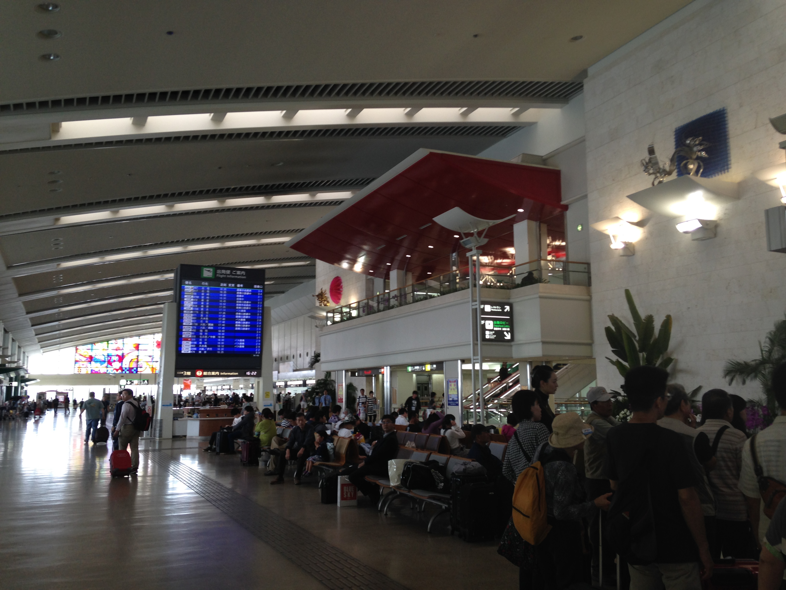
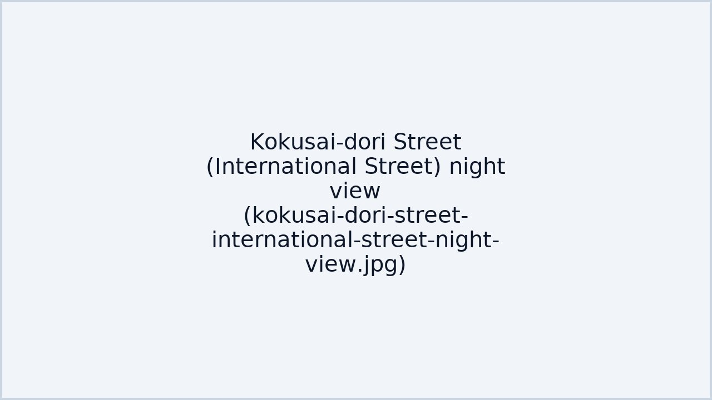
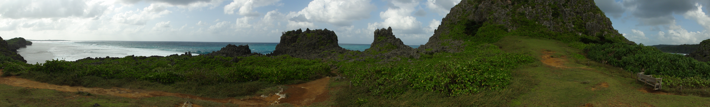
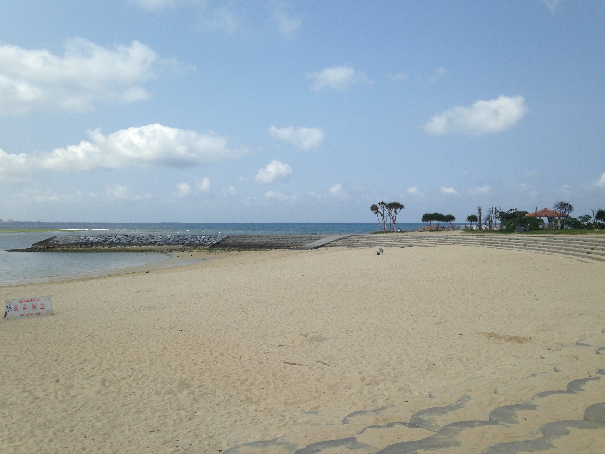
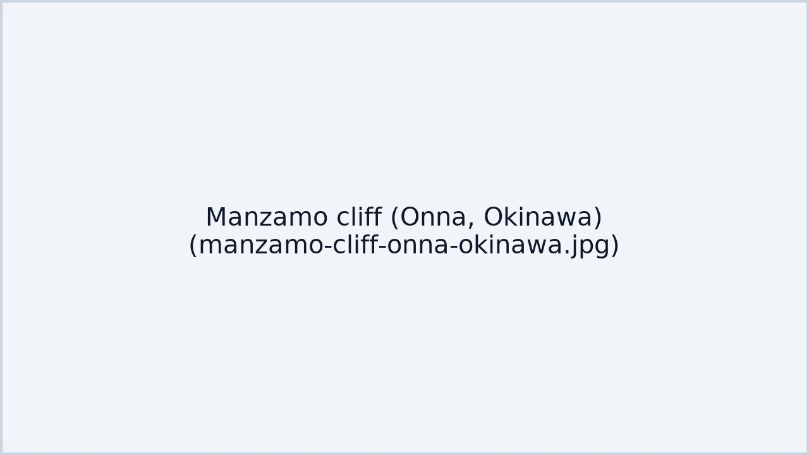
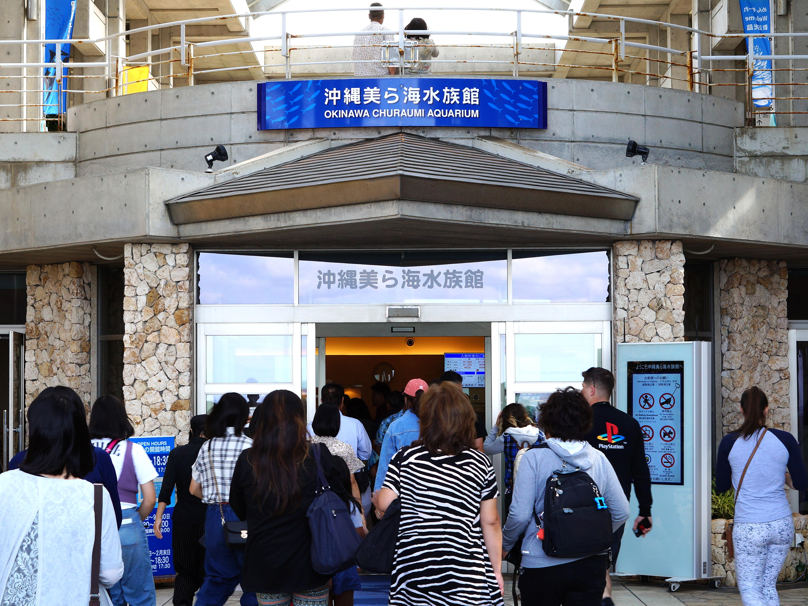
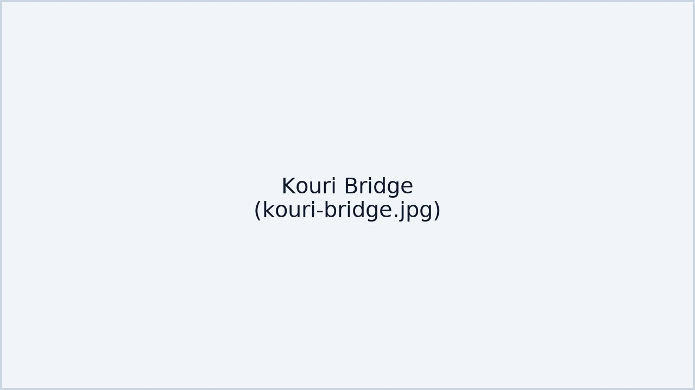
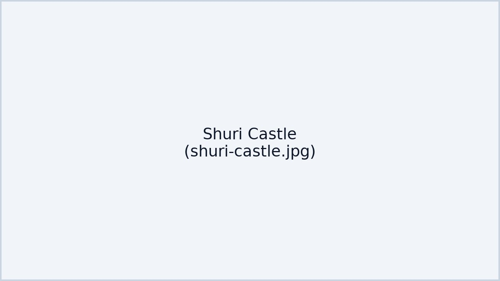
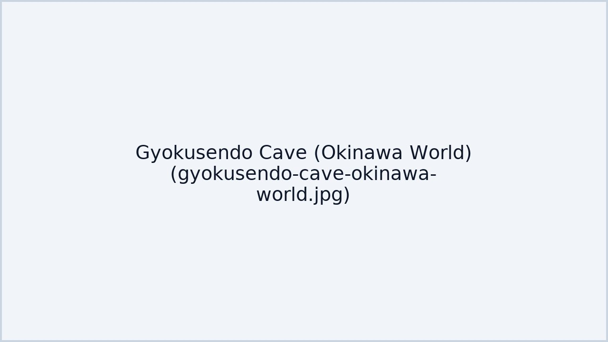
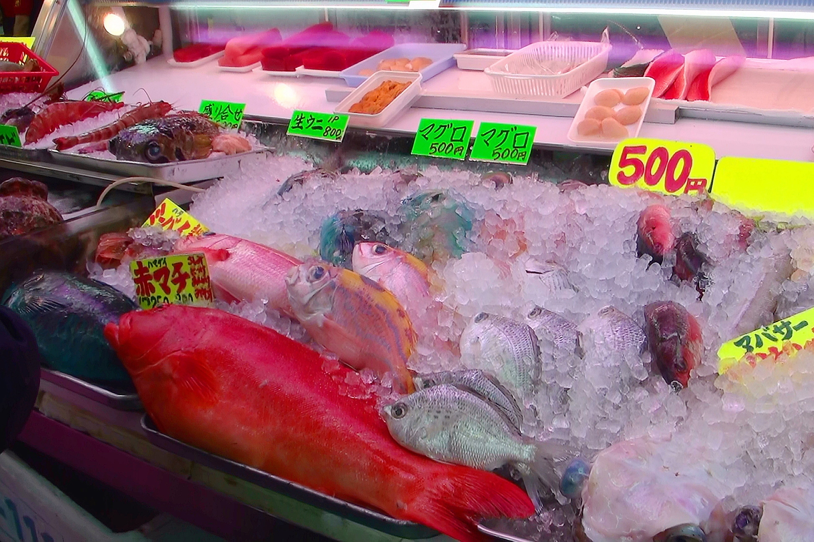

不自駕
公共交通＋一日巴士
8/21–8/25
浮潛安排於 Day2（距離返程 ＞ 48h）
提示：上方按鈕可切換各日；本頁已設定避免頂欄遮擋標題。
Day 1（8/21）
那霸抵達 → 國際通入住

展開／收起
時間軸 Timeline
- 14:30 抵達 那覇空港 ✈️ → 乘 Yui Rail（機場站 → 牧志 / 美榮橋 / 縣廳前，約 20–25 分，班距 4–8 分）
- 15:30 酒店 Check-in（國際通一帶步行 5–10 分）
- 16:30–18:00 波上宮＋波之上海灘 散步看海（各 10–15 分步行距離；建議停留 60–90 分）
- 18:30–20:00 國際通 & 牧志公設市場 周邊逛街
- 20:00–21:00 晚餐 & 小食巡禮（屋台村／市場周邊）
景點詳介
波上宮：沖繩代表性神社，建於臨海小山丘上；樓梯可直達 波之上海灘。黃昏逆光影相靚，遇到潮退時沙灘更闊。
- 交通：牧志站步行約 20 分；或單軌至旭橋站後步行/轉公車。
- 逗留：1–1.5 小時（連海灘）
- 貼士：海邊風大，帶薄外套；海灘沖洗設備有限。
波上宮 地圖
波之上海灘 地圖

街頭美食／餐廳推薦（步行可達）
- 牧志公設市場：海鮮丼、苦瓜炒豆腐、炸天婦羅等沖繩家常味道。參考價位 ¥600–¥1,500。
市場 地圖
- 國際通屋台村：串燒、拉麵、沖繩麵、生啤掃街；價位 ¥500–¥1,200。
屋台村 地圖
路線指示 / 地圖
交通換乘提示卡單軌由「那覇空港站」出發，往
牧志 /
美榮橋 /
縣廳前 任何一站皆可；IC 卡可用。步行至國際通酒店後，再步行到如怕遠可改在「
旭橋站」轉巴士。
Day 2（8/22）
青之洞窟浮潛 → 北谷美國村入住

展開／收起
時間軸 Timeline
- 08:00 酒店集合／自赴 真榮田岬（車程約 50–70 分）
- 09:30–12:00 青之洞窟 浮潛（講解＋下水＋返岸）
- 12:30–13:30 沖洗更衣 & 午餐
- 14:30 前往 北谷・美濱美國村（巴士/計程車 35–50 分）
- 16:00–18:30 Sunset Beach 看日落、商場散策
- 19:00 入住美國村區內酒店
活動與交通
青之洞窟（真榮田岬）：石灰岩海蝕洞，能見度高；如遇浪況不佳，營運商會改點。建議參加含接送團更省時。
- 安全：遵從教練；穿礁石鞋；活動後 24 小時內避免搭機。
- 裝備：面鏡、呼吸管、救生衣由團方提供；自帶毛巾。
集合點 地圖

路線指示 / 地圖
交通換乘提示卡
參加團有接送最省事；如自赴，從那覇坐巴士至真榮田岬（視路線 50–70 分）。午後前往北谷可選直達巴士或計程車；提早看好回程時間在 Sunset Beach 看日落。
Day 3（8/23）
北部經典一日遊（觀光巴士）

展開／收起
時間軸（參考 Hip Hop Bus/一日團）
- 08:00 那覇／美國村集合出發
- 09:30 萬座毛（停留 40–60 分）
- 11:00–13:30 美麗海水族館（含午餐，自由參觀 2–2.5 小時）
- 14:30 古宇利大橋（停留 30–40 分）
- 18:00 回到那覇／美國村解散


路線指示 / 地圖
交通換乘提示卡
建議預約觀光巴士（如 Hip Hop Bus），行程含萬座毛→美麗海→古宇利，時間掌控穩定；自行搭乘者可查 111/117 或山原急行巴士，需預留轉乘與步行。
Day 4（8/24）
首里城 → 玉泉洞（Okinawa World）→ 瀨長島

展開／收起
時間軸 Timeline
美食推薦
- 首里周邊食堂：沖繩麵、三枚肉、豆腐料理；¥700–¥1,200。
- Umikaji Terrace：咖啡、甜品、簡餐；海景一流；¥800–¥1,500。

路線指示 / 地圖
交通換乘提示卡上午搭單軌至
首里站步行入園；之後轉巴士/計程車至
Okinawa World（玉泉洞）；黃昏再往
瀨長島，留意末班車時刻或視情況回那覇轉乘。
Day 5（8/25）
最後採購 → 那霸機場返港

展開／收起
時間軸 Timeline
- 09:00–10:30 第一牧志公設市場 採購手信／早餐小吃
- 11:00 返回酒店取行李 → 單軌至那覇空港（車程 20–25 分）
- 起飛前 2 小時 抵達機場辦理登機、安全檢查
路線指示 / 地圖
交通換乘提示卡
從牧志公設市場返酒店取行李，搭單軌至那覇空港；高峰期安檢較慢，請預留 2 小時以上。
交通與票券／小貼士
- 市區單軌：班距約 4–10 分；郊區公車班距較疏，預留轉乘與步行。
- 票券：單軌 1/2 日券、巴士周遊券；視行程密度選擇。
- 夏季：高溫與紫外線強，補水、防曬、輕便雨具；留意颱風預報。
- 海上活動：依教練指示；活動後 24 小時內避免搭機。